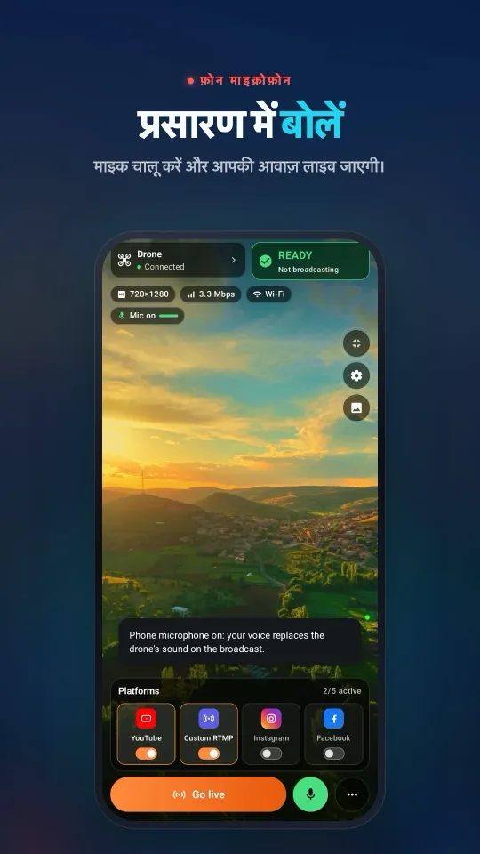

DJI Mavic 4 Pro से लाइव स्ट्रीम कैसे करें
आपका DJI Mavic 4 Pro DJI Fly की RTMP तस्वीर एक अलग फ़ोन पर Stream My Drone को या कंप्यूटर पर Stream My Drone को भेज सकता है। शुरुआत अपने controller से करें: RC 2 और RC Pro 2 दोनों में स्क्रीन है, पर इनका माइक्रोफ़ोन हार्डवेयर अलग है। तस्वीर रिसीव करने, गंतव्य चुनने और दर्शक असल में क्या देख रहे हैं यह जाँचने के लिए नीचे का तरीका अपनाएँ।
संक्षेप में
- RC 2 या RC Pro 2 इस्तेमाल करें; DJI के मौजूदा Mavic 4 Pro सेटअप में कोई RC-N controller शामिल नहीं है।
- Stream My Drone चलाने वाला एक अलग फ़ोन बिना कंप्यूटर के स्ट्रीम लेने और आगे भेजने का सेटअप देता है।
- DJI Fly का RTMP प्रसारण ड्रोन पर होने वाली हाई-रेज़ोल्यूशन रिकॉर्डिंग से अलग आउटपुट है।
- रिसीविंग ऐप का लोकल पता DJI Fly में डालें और प्लेटफ़ॉर्म की जानकारी रिसीविंग ऐप में।
- टेकऑफ़ से पहले असली RTMP मेन्यू और माइक्रोफ़ोन वाला संदेश जाँचें, फिर प्लेटफ़ॉर्म का दर्शक पेज पक्का करें।
Mavic 4 Pro का कौन-सा controller फ़ीड भेज सकता है?
DJI की ड्रोन लिंकिंग गाइड Mavic 4 Pro के लिए DJI RC 2 और DJI RC Pro 2 बताती है। दोनों अपनी बिल्ट-इन स्क्रीन पर DJI Fly चलाते हैं। किसी दूसरे ड्रोन का RC-N1, RC-N2 या RC-N3 वाला तरीका यहाँ न अपनाएँ: इस मॉडल के लिए ये controller दर्ज नहीं हैं।
| Controller | फ़्लाइट ऐप | इस गाइड में रिसीवर |
|---|---|---|
| DJI RC 2 | बिल्ट-इन स्क्रीन पर DJI Fly | अलग फ़ोन पर Stream My Drone, या कंप्यूटर पर Stream My Drone |
| DJI RC Pro 2 | बिल्ट-इन स्क्रीन पर DJI Fly | वही अलग फ़ोन या डेस्कटॉप वाले तरीके |
DJI RC Pro 2, DJI RC Pro से अलग है। इसका आधिकारिक FAQ बिल्ट-इन माइक्रोफ़ोन की पुष्टि करता है। RC 2 इस्तेमाल करने वाले बाहरी माइक्रोफ़ोन तैयार रखें; प्रसारण शुरू करने से पहले अपने DJI Fly वर्शन में दिखने वाले संदेश का पालन करें।
प्रसारण की योजना से पहले RTMP मेन्यू जाँचें
ड्रोन, controller और DJI Fly अपडेट करें, ड्रोन को लिंक करें और उसका कैमरा व्यू खोलें। GO FLY → ••• → Transmission → Live Streaming Platforms → RTMP खोलें। मेन्यू के नाम वर्शन और भाषा के हिसाब से अलग हो सकते हैं। अगर आपके फ़र्मवेयर में RTMP नहीं है, तो रिसीविंग ऐप उसे नहीं जोड़ सकता।
DJI की मौजूदा लाइवस्ट्रीम गाइड RC 2 और RC Pro 2 दोनों के RTMP आउटपुट को 720p तक सीमित करती है। यह DJI Fly v1.16.0 से RC 2 पर माइक्रोफ़ोन जुड़ा होना भी ज़रूरी बताती है। अपने controller पर उपलब्ध आउटपुट सेटिंग जाँचें; 1080p स्क्रीन या ड्रोन की ऊँची रिकॉर्डिंग सेटिंग इस सीमा को नहीं बदलती।
आपके फ़ोन पर ऐसा दिखता हैDJI Fly कनेक्शन से लेकर कई प्लेटफ़ॉर्म पर प्रसारण तक, सब एक ही स्क्रीन पर।



बिना कंप्यूटर Mavic 4 Pro: फ़ोन पर रिसीव करें
- अलग फ़ोन पर Stream My Drone इंस्टॉल करेंइसे Google Play या App Store से डाउनलोड करें। DJI Fly को अपने RC 2 या RC Pro 2 पर खुला रखें; फ़ोन उसका वीडियो लेकर आगे भेजेगा।
- controller और रिसीवर को एक ही नेटवर्क पर रखेंइंटरनेट वाला Wi-Fi नेटवर्क इस्तेमाल करें। फ़ील्ड में Android रिसीविंग फ़ोन ख़ुद हॉटस्पॉट भी बन सकता है। नेटवर्क चुनने के बाद Stream My Drone खोलें और iPhone पर पूछे जाने पर लोकल नेटवर्क की अनुमति दें। नेटवर्क बदलें तो दिख रहा पता फिर से जाँचें।
- रिसीवर का पता DJI Fly में डालेंStream My Drone में दिख रहा पूरा लोकल RTMP पता कॉपी करें। DJI Fly में GO FLY → ••• → Transmission → Live Streaming Platforms → RTMP खोलें। अपने वर्शन के लेबल के हिसाब से चलें: अलग पता और key फ़ील्ड माँगने वाली स्क्रीन, पूरा RTMP URL माँगने वाली स्क्रीन से अलग है। अपनी YouTube या Instagram key लोकल रिसीवर पते में न जोड़ें। मेन्यू की पूरी जानकारी के लिए DJI Fly RTMP गाइड देखें।
- लोकल फ़ीड शुरू करें और आवाज़ जाँचेंDJI Fly में लाइवस्ट्रीमिंग शुरू करें, फिर देखें कि Stream My Drone में चलती तस्वीर आ रही है। controller पर चुना गया माइक्रोफ़ोन जाँचें और ग्राउंड टेस्ट के दौरान प्लेटफ़ॉर्म पर आवाज़ सुनें। बिना ठीक आवाज़ वाली तस्वीर की गड़बड़ी टेकऑफ़ से पहले पकड़ना आसान है।
- गंतव्य जोड़ें और प्रकाशित करेंजहाँ विकल्प हो वहाँ प्लेटफ़ॉर्म खाता कनेक्ट करें, या Stream My Drone में उसका मौजूदा सर्वर URL और stream key डालें। फ़ॉरवर्डिंग शुरू करें और प्लेटफ़ॉर्म डैशबोर्ड खोलें। Go Live का कोई अलग चरण हो तो पूरा करें, फिर पक्का करें कि असली दर्शक पेज चल रहा है।
रिसीविंग फ़ोन controller से अलग डिवाइस है। मोबाइल फ़ॉरवर्डिंग आने वाले वीडियो को वैसा ही रखती है; प्रीव्यू का क्रॉप या धुंधला बैकग्राउंड नया वर्टिकल प्रसारण नहीं बनाता। iPhone पर सेटअप के दौरान ऐप खुला रखें; बैकग्राउंड में रिसीव करते रहना Picture in Picture पर निर्भर है।
Mac या Windows पर Mavic 4 Pro: डेस्कटॉप प्रोडक्शन
DJI Fly को अपने RC 2 या RC Pro 2 पर चलने दें। अपने Mac या Windows PC पर Stream My Drone इंस्टॉल करें। कंप्यूटर आपके लोकल नेटवर्क पर DJI Fly की RTMP फ़ीड लेता है; इस सेटअप में controller से HDMI कैप्चर या USB वेबकैम कनेक्शन इस्तेमाल नहीं होता।
- कंप्यूटर का लोकल RTMP पता कॉपी करेंकंप्यूटर और DJI Fly चलाने वाले डिवाइस को एक ही नेटवर्क से जोड़ें। Stream My Drone में Connect your drone के नीचे दिया पता कॉपी करें।
rtmp://192.168.1.20:1935/droneसिर्फ़ उदाहरण है: अपने ऐप में दिख रहा पता इस्तेमाल करें। - फ़ीड भेजें और रिसेप्शन जाँचेंवह लोकल पता DJI Fly में डालें और स्ट्रीमिंग शुरू करें। अगर फ़ायरवॉल पूछे, तो ऐप को प्राइवेट नेटवर्क पर कनेक्शन लेने की अनुमति दें। प्लेटफ़ॉर्म सेट करने से पहले चलता प्रीव्यू जाँचें।
- आउटपुट चुनें और गंतव्य शुरू करेंलैंडस्केप या डेस्कटॉप वर्टिकल लेआउट चुनें, फिर प्लेटफ़ॉर्म का सर्वर URL और key जोड़ें। आउटपुट शुरू करें, पक्का करें कि प्लेटफ़ॉर्म उसे पा रहा है और उसका प्रकाशन चरण पूरा करें। कई गंतव्यों के लिए, उन्हें एक साथ चालू करने से पहले कुल अपलोड की ज़रूरत जाँचें।

Mavic 4 Pro का प्रसारण किसी प्लेटफ़ॉर्म पर भेजें
| गंतव्य | आपको क्या चाहिए | गाइड |
|---|---|---|
| YouTube | लाइव की पहुँच चालू और तैयार प्रसारण | YouTube सेटअप |
| Live Producer की पहुँच और मौजूदा RTMPS जानकारी | Instagram सेटअप | |
| तैयार लाइव प्रसारण और उसका सर्वर URL व key | Facebook सेटअप | |
| TikTok | खाते पर RTMP की पहुँच, या कंप्यूटर पर LIVE Studio की पहुँच | TikTok सेटअप |
खाते की पात्रता प्लेटफ़ॉर्म तय करता है। कोई भी ऐप न stream key देता है, न पहुँच की शर्तों को दरकिनार करता है। किसी संगत स्टूडियो ऐप के साथ कंप्यूटर वाले तरीके के लिए Stream My Drone एक वर्चुअल कैमरा भी देता है। लोकल प्रीव्यू सिर्फ़ रिसेप्शन साबित करता है; चलता हुआ दर्शक पेज ही प्रकाशन की पुष्टि करता है।
रिकॉर्डिंग क्वालिटी, पोर्ट्रेट शूटिंग और आपका प्रसारण
तीन तस्वीरों को अलग समझें: ड्रोन पर रिकॉर्ड हुई फ़ाइल, controller का लाइव व्यू और रिसीवर तक आने वाला RTMP वीडियो। स्ट्रीम को रिसीव हुए आकार और बिटरेट से परखें। बड़ा डेस्कटॉप आउटपुट वह डिटेल दोबारा नहीं बना सकता जो आने वाली तस्वीर में नहीं है।
Mavic 4 Pro वर्टिकल शूट कर सकता है, और DJI ने इसके कंट्रोल अपनी पोर्ट्रेट मोड गाइड में बताए हैं। ओरिएंटेशन बदलने के बाद जाँचें कि RTMP रिसीवर को असल में क्या मिल रहा है। वर्टिकल रिकॉर्डिंग सेटिंग, घुमाई हुई controller स्क्रीन और 9:16 प्लेटफ़ॉर्म प्रसारण — इनमें से एक की जाँच दूसरे की जगह नहीं ले सकती।
- सोच-समझकर फ़्रेम करें। बाहर जाने वाली तस्वीर प्लेटफ़ॉर्म पर जाँचें। मोबाइल पर प्रीव्यू लेआउट उसे दोबारा एनकोड नहीं करता; डेस्कटॉप पर वह क्रॉप या पूरी तस्वीर वाला आउटपुट चुनें जिसे आप प्रकाशित करना चाहते हैं।
- हर गंतव्य का हिसाब रखें। लगातार 5 Mbps का आउटपुट ओवरहेड के बिना लगभग 2.25 GB प्रति घंटा खर्च करता है। ऐसे दो आउटपुट के लिए कुल करीब 10 Mbps अपलोड और 4.5 GB प्रति घंटा चाहिए।
- ज़मीन पर टेस्ट करें। मूवमेंट, आवाज़ और असली दर्शक पेज जाँचें। रिसीविंग फ़ोन को हॉटस्पॉट के पास रखें और लंबे प्रसारण में उसकी बैटरी और तापमान पर नज़र रखें।
Mavic 4 Pro लाइव फ़ीड की समस्याएँ और समाधान
- RTMP विकल्प नहीं है: DJI Fly में controller मॉडल और सॉफ़्टवेयर वर्शन पक्का करें। RC 2 और पुराने DJI RC की सुविधाएँ अलग हैं; रिसीवर बदलने से controller की क्षमता नहीं बदलती।
- DJI Fly माइक्रोफ़ोन माँगता है: RC 2 के साथ सपोर्टेड माइक्रोफ़ोन जोड़ें और उसका इनपुट फिर से जाँचें। RC Pro 2 के साथ यह मानने के बजाय कि RC 2 के निर्देश लागू होते हैं, चुना गया इनपुट और माइक्रोफ़ोन की अनुमतियाँ जाँचें।
- कनेक्शन विफल: रिसीवर का मौजूदा लोकल IP पता इस्तेमाल करें। गेस्ट Wi-Fi आइसोलेशन, फ़ायरवॉल या हॉटस्पॉट बदलने से लोकल कनेक्शन टूट सकता है।
localhostख़ुद controller को दर्शाता है। - प्रीव्यू चलता है पर दर्शकों को कुछ नहीं दिखता: फ़ॉरवर्डिंग, गंतव्य की जानकारी और प्लेटफ़ॉर्म पर Go Live का कोई बाकी चरण जाँचें।
- iPhone पर रिसेप्शन रुक जाता है: Stream My Drone पर लौटें और Picture in Picture जाँचें। इसके बिना ऐप बैकग्राउंड में जाने पर iOS रिसेप्शन रोक सकता है।
आधिकारिक स्रोत और संबंधित गाइड
25 अक्टूबर 2026 को जाँचा गया: controller विकल्पों के लिए DJI ड्रोन लिंकिंग गाइड; माइक्रोफ़ोन हार्डवेयर के लिए DJI RC Pro 2 FAQ; RTMP सीमाओं के लिए DJI Fly लाइवस्ट्रीम ऑपरेशन गाइड; और वर्टिकल शूटिंग कंट्रोल के लिए DJI पोर्ट्रेट मोड। फ़र्मवेयर और मेन्यू की उपलब्धता बदल सकती है; अपना कॉम्बिनेशन ख़ुद जाँचें।
पिछली पीढ़ी के लिए Mavic 3, Classic और Pro स्ट्रीमिंग गाइड पढ़ें। एक ही फ़ीड कई सेवाओं पर भेजने के लिए DJI ड्रोन से मल्टीस्ट्रीमिंग देखें।
सवाल
क्या कंप्यूटर के बिना Mavic 4 Pro से लाइव स्ट्रीम हो सकती है?
हाँ, RC 2 या RC Pro 2 पर DJI Fly इस्तेमाल करें और उसकी RTMP फ़ीड उसी लोकल नेटवर्क पर एक अलग फ़ोन के Stream My Drone में लें। गंतव्य फ़ोन ऐप में सेट करें और हर प्लेटफ़ॉर्म पर प्रकाशन की पुष्टि करें।
क्या Mavic 4 Pro के साथ RC-N3 वाला फ़ोन सेटअप चलेगा?
DJI की मौजूदा लिंकिंग गाइड इस ड्रोन के लिए RC 2 और RC Pro 2 बताती है। यह गाइड किसी दूसरे मॉडल से RC-N संगतता मानने के बजाय इन्हीं सपोर्टेड स्क्रीन वाले controller का इस्तेमाल करती है।
क्या दोनों controller को बाहरी माइक्रोफ़ोन चाहिए?
RC Pro 2 में बिल्ट-इन माइक्रोफ़ोन है। RC 2 के लिए DJI ने Fly v1.16.0 से माइक्रोफ़ोन जुड़ा होने की शर्त बताई है। उड़ान से पहले आवाज़ टेस्ट करें और अपने controller पर दिखने वाले संदेश का पालन करें।
क्या 6K रिकॉर्डिंग का मतलब 6K लाइवस्ट्रीम है?
नहीं। कैमरे से रिकॉर्ड हुई फ़ाइल DJI Fly के RTMP आउटपुट से अलग है। रिसीविंग ऐप में असली इनपुट और प्लेटफ़ॉर्म पर दिखने वाली स्ट्रीम जाँचें।
मेरी YouTube या Instagram जानकारी कहाँ डालनी है?
फ़ोन या कंप्यूटर पर Stream My Drone की गंतव्य सेटिंग में। DJI Fly में वही लोकल RTMP पता जाता है जो यह ऐप दिखाता है।
क्या controller की स्क्रीन घुमाने से प्रसारण वर्टिकल हो जाता है?
रिसीवर में आ रही तस्वीर और प्लेटफ़ॉर्म का दर्शक पेज जाँचें। controller की स्क्रीन, कैमरे का रिकॉर्डिंग ओरिएंटेशन और बाहर जाने वाले वीडियो का फ़ॉर्मेट अलग-अलग हैं। डेस्कटॉप वाला Stream My Drone आउटपुट को वर्टिकल लेआउट में बदल सकता है।
अपने फ़ोन से ड्रोन को लाइव करें
Android और iPhone के लिए Stream My Drone, DJI Fly की तस्वीर लेकर उसे YouTube, Instagram, Facebook, TikTok, Twitch, Kick या आपके अपने सर्वर पर, एक साथ कई जगह भेजता है। एक बार की ख़रीद, कोई सब्सक्रिप्शन नहीं।

और गाइड
DJI Flip से लाइव स्ट्रीम कैसे करें
RC 2, RC-N3 या RC-N2 के साथ DJI Flip से लाइव स्ट्रीम करें: फ़ोन और कंप्यूटर पर RTMP सेटअप, पाम और फ़ोन कंट्रोल का अंतर, वर्टिकल फ़्रेमिंग और प्लेटफ़ॉर्म जाँच।
DJI Lito X1 से लाइव स्ट्रीम कैसे करें
RC 2, RC-N3 या RC-N2 के साथ DJI Lito X1 से लाइव स्ट्रीम करें: DJI Fly RTMP सेटिंग, फ़ोन और कंप्यूटर के तरीके, प्लेटफ़ॉर्म सेटअप और काम की समस्या-समाधान टिप्स।
DJI Lito 1 से लाइव स्ट्रीम कैसे करें
RC 2, RC-N3 या RC-N2 के साथ DJI Lito 1 से लाइव स्ट्रीम करें: DJI Fly RTMP सेटिंग, फ़ोन और कंप्यूटर के तरीके, प्लेटफ़ॉर्म सेटअप और काम की समस्या-समाधान टिप्स।
DJI Air 3S से लाइव स्ट्रीम कैसे करें
DJI Air 3S से YouTube, Instagram या Facebook पर लाइव स्ट्रीम करें। controller चुनें, DJI Fly RTMP को फ़ोन या कंप्यूटर से जोड़ें और बाहर जाने वाली तस्वीर जाँचें।
DJI Air 3 से लाइव स्ट्रीम कैसे करें
DJI Air 3 से YouTube, Instagram या Facebook पर लाइव जाएँ: RC 2 या RC-N2 चुनें, DJI Fly RTMP को फ़ोन या कंप्यूटर से जोड़ें और प्रसारण से पहले बाहर जाने वाली तस्वीर जाँचें।
DJI Mavic 3, Classic या Pro से लाइव स्ट्रीम कैसे करें
RC-N1 या RC Pro के साथ DJI Mavic 3, Classic या Pro से लाइव स्ट्रीम करें। जानें DJI RC से स्ट्रीम क्यों नहीं होती, फ़ोन रिसीवर, डेस्कटॉप RTMP और क्वालिटी की सीमाएँ।
DJI Mini 3 Pro से लाइव स्ट्रीम कैसे करें
RC-N1, फ़ोन पर DJI Fly और कंप्यूटर पर Stream My Drone से DJI Mini 3 Pro की लाइव स्ट्रीम करें। जानें पुराना DJI RC यह RTMP तरीका क्यों इस्तेमाल नहीं कर सकता।
DJI Mini 3 से लाइव स्ट्रीम कैसे करें
RC-N1 और DJI Fly के ज़रिए कंप्यूटर पर Stream My Drone तक DJI Mini 3 की लाइव स्ट्रीम सेट करें। DJI RC की सीमा, 720p लाइव व्यू क्वालिटी और प्लेटफ़ॉर्म प्रकाशन जाँचें।
DJI Mini 5 Pro से लाइव स्ट्रीम कैसे करें
RC 2 या RC-N3 के साथ DJI Mini 5 Pro से लाइव स्ट्रीम करें। DJI Fly में RTMP सेट करें, फ़ोन या कंप्यूटर इस्तेमाल करें और ड्रोन का वीडियो YouTube, Instagram या Facebook पर भेजें।
DJI Mini 4 Pro से लाइव स्ट्रीम कैसे करें
RC 2 या RC-N2 के साथ DJI Mini 4 Pro से लाइव स्ट्रीम करें। फ़ोन और कंप्यूटर सेटअप, DJI Fly की RTMP सेटिंग्स, माइक्रोफ़ोन की ज़रूरत और प्लेटफ़ॉर्म की जाँच, सब एक गाइड में।
DJI ड्रोन से लाइव जानवरों को पहचानें और गिनें
Stream My Drone ड्रोन की लाइव तस्वीर में बकरी, भेड़, गाय, घोड़े, गधे और मुर्गियाँ पहचानता है, स्ट्रीम पर उन्हें चिह्नित करता है और गिनता है, सब कुछ आपके अपने कंप्यूटर पर।
DJI Fly RTMP लाइव स्ट्रीमिंग: पूरा सेटअप
DJI Fly में RTMP लाइव स्ट्रीमिंग कैसे सेट करें: सेटिंग कहाँ है, कौन सा पता डालना है, कंट्रोलर और कंप्यूटर को एक नेटवर्क पर कैसे जोड़ें और समस्या हो तो कैसे ठीक करें।
DJI Fly से Instagram पर लाइव स्ट्रीम क्यों नहीं होती (और इसका हल)
DJI Fly में Instagram का विकल्प नहीं है और उसका RTMP क्लाइंट Instagram के लिए ज़रूरी एन्क्रिप्टेड RTMPS नहीं भेज सकता। जानिए क्यों, और फिर भी DJI ड्रोन से Instagram पर लाइव कैसे जाएँ।
अपने DJI ड्रोन को कंप्यूटर का वेबकैम बनाएँ
Stream My Drone के वर्चुअल कैमरे से अपने DJI ड्रोन को TikTok LIVE Studio, OBS, Zoom, Google Meet या Teams के लिए वेबकैम बनाएँ। सेटअप, उपयोग के आइडिया और समस्याओं के हल।
DJI Neo से लाइव स्ट्रीम कैसे करें
DJI Neo से लाइव स्ट्रीम कैसे करें: कौन सा कंट्रोल मोड चलता है (फ़ोन, RC-N3, गॉगल्स), DJI Fly में RTMP, और Stream My Drone से Instagram, TikTok या YouTube पर लाइव जाना।
DJI Avata 2 से लाइव स्ट्रीम कैसे करें
DJI Avata 2 की FPV फ़ुटेज लाइव स्ट्रीम कैसे करें: Goggles 3 का व्यू फ़ोन पर DJI Fly से साझा करें, RTMP पर स्ट्रीम करें और Instagram, TikTok या YouTube पर लाइव जाएँ।
अपने DJI Osmo कैमरे से Instagram, TikTok और दूसरे प्लेटफ़ॉर्म पर लाइव स्ट्रीम करें
DJI Mimo, Osmo Action, Osmo Pocket और Osmo 360 कैमरों से RTMP पर स्ट्रीम कर सकता है। उसे Stream My Drone पर भेजें और एक साथ Instagram, TikTok और YouTube पर लाइव जाएँ।
Osmo Pocket 3 से Instagram और TikTok पर लाइव स्ट्रीम कैसे करें
DJI Osmo Pocket 3 से DJI Mimo के RTMP पर एक साथ Instagram, TikTok और YouTube पर लाइव स्ट्रीम कैसे करें, और Stream My Drone से इसे वायरलेस वेबकैम कैसे बनाएँ।
Osmo Action कैमरे से Instagram और TikTok पर लाइव स्ट्रीम कैसे करें
Stream My Drone से DJI Osmo Action 6, 5 Pro, 4 या 3 को DJI Mimo के RTMP पर एक साथ Instagram, TikTok, YouTube और Twitch पर लाइव स्ट्रीम करें। सेटअप और सही सेटिंग्स।
DJI ड्रोन से TikTok पर लाइव कैसे जाएँ
DJI Fly से अपने DJI ड्रोन को TikTok पर लाइव स्ट्रीम करें: TikTok स्ट्रीम की के साथ, या बिना की के TikTok LIVE Studio और वर्चुअल कैमरे से। सेटिंग्स और समस्याओं के हल।
DJI ड्रोन से Instagram पर लाइव कैसे जाएँ
DJI ड्रोन से Instagram पर लाइव जाएँ: instagram.com से स्ट्रीम URL और की लें, DJI Fly की RTMP स्ट्रीम Stream My Drone के ज़रिए भेजें, फिर Instagram पर Go live दबाएँ।
DJI ड्रोन से YouTube पर लाइव स्ट्रीम कैसे करें
DJI ड्रोन से YouTube पर लाइव स्ट्रीम करें: लाइव स्ट्रीमिंग चालू करें, YouTube Studio से स्ट्रीम की कॉपी करें, DJI Fly का RTMP Stream My Drone से भेजें। सेटिंग्स और सुझाव।
DJI ड्रोन से Facebook पर लाइव कैसे जाएँ
DJI ड्रोन से Facebook पर लाइव स्ट्रीम करें: Live Producer से RTMPS सर्वर URL और स्ट्रीम की लें, DJI Fly की स्ट्रीम Stream My Drone के ज़रिए भेजें, और लाइव जाएँ।
DJI ड्रोन से Twitch पर स्ट्रीम कैसे करें
DJI ड्रोन से Twitch पर लाइव स्ट्रीम करें: Creator Dashboard से अपनी स्ट्रीम की कॉपी करें, Stream My Drone में Twitch को कस्टम RTMP गंतव्य के रूप में जोड़ें और लाइव जाएँ।
DJI ड्रोन से Kick पर स्ट्रीम कैसे करें
DJI ड्रोन से Kick पर लाइव स्ट्रीम करें: Kick डैशबोर्ड से स्ट्रीम URL और की कॉपी करें, उन्हें Stream My Drone में कस्टम RTMP गंतव्य के रूप में जोड़ें, और लाइव जाएँ।
DJI ड्रोन से एक साथ कई प्लेटफ़ॉर्म पर स्ट्रीम करें
Stream My Drone से DJI ड्रोन की एक लाइव स्ट्रीम एक साथ TikTok, Instagram, YouTube, Facebook, Twitch और Kick पर भेजें — मुफ़्त, लोकल, बिना किसी रीस्ट्रीम सेवा के।
Stream My Drone बनाम Restream: आपके ड्रोन के लिए कौन सा?
DJI ड्रोन को कई प्लेटफ़ॉर्म पर स्ट्रीम करना है: Restream का क्लाउड रिले या आपके अपने कंप्यूटर पर Stream My Drone? लागत, वॉटरमार्क, Instagram, वर्टिकल वीडियो और कब कौन बेहतर।
बिना NGINX और OBS सेटअप के DJI ड्रोन से स्ट्रीम करें
DJI Fly को OBS में लाने का आम तरीका है NGINX RTMP सर्वर, एक कॉन्फ़िग फ़ाइल और मीडिया सोर्स। जानिए इस सेटअप में क्या-क्या लगता है, और एक ही ऐप से इसे कैसे छोड़ें।